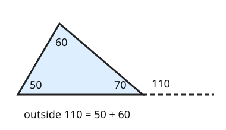

Part of Angle Facts. Answer in the chat (1: ..., g: c), add sure or guess after any answer, and say done when finished.
R1. Three angles meet at a point: 40, 65 and x degrees. What is x?
75, angles at a point make 180 like on a straight line (sure)
Last time: a side is extended past a corner, and the other two inside angles are 50 and 60 degrees. What is the outside angle? You said a) 70. It is b) 110.

Your 70 is the inside angle at that corner. The outside angle sits on a straight line with it, so it is 180 - 70 = 110 (notes 2). And since the three inside angles add up to 180 (notes 5), that 110 is just the other two inside angles together: 50 + 60 = 110 (notes 7).
Q1. A triangle has inside angles of 35 and 80 degrees at two corners. The side at the third corner is extended. What is the outside angle there?
115 (sure)
Q2. In your own words: why does the outside angle equal the two far inside angles added together?
the outside angle and the inside angle at that corner make a straight line, so they add to 180. The three inside angles add to 180 too. Both totals share the inside angle at that corner, so what is left must match: the outside angle equals the other two
Q3. Raj says an outside angle can be smaller than one of the two far inside angles, like an outside angle of 40 next to a far angle of 70. What is wrong?
the outside angle is both far angles added, so it is 70 plus something more than 0. It has to be bigger than each far angle